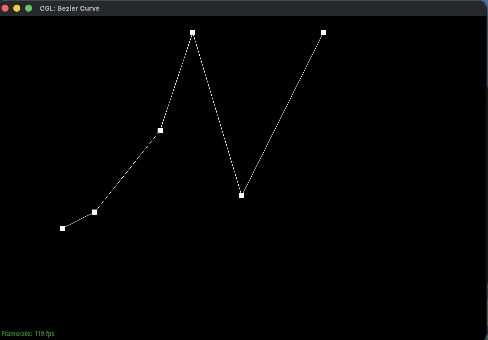
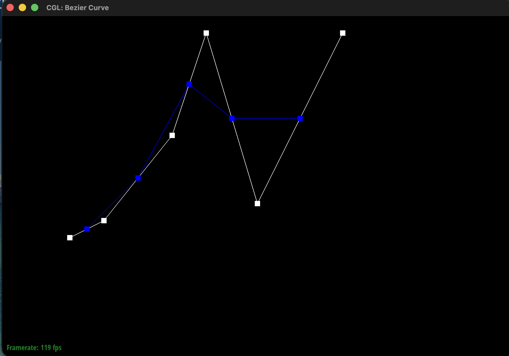
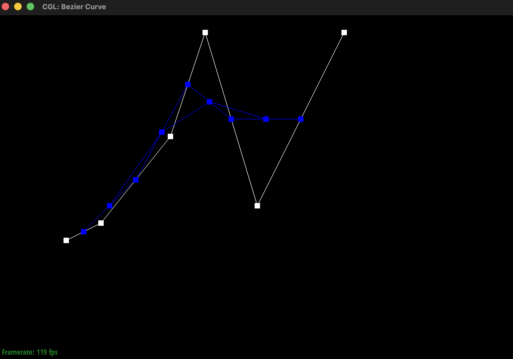
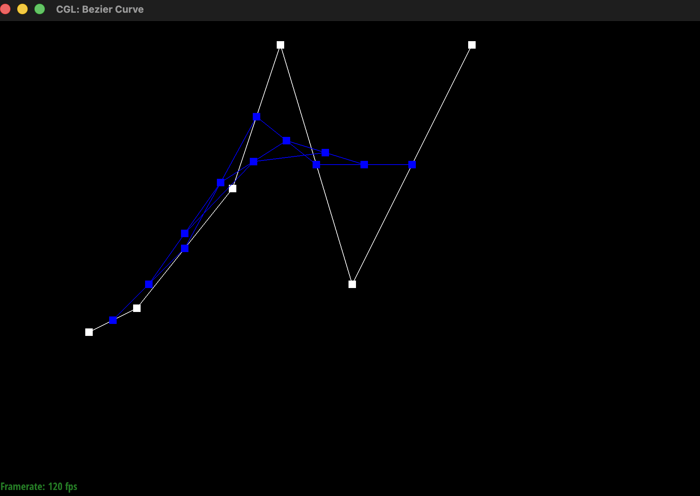
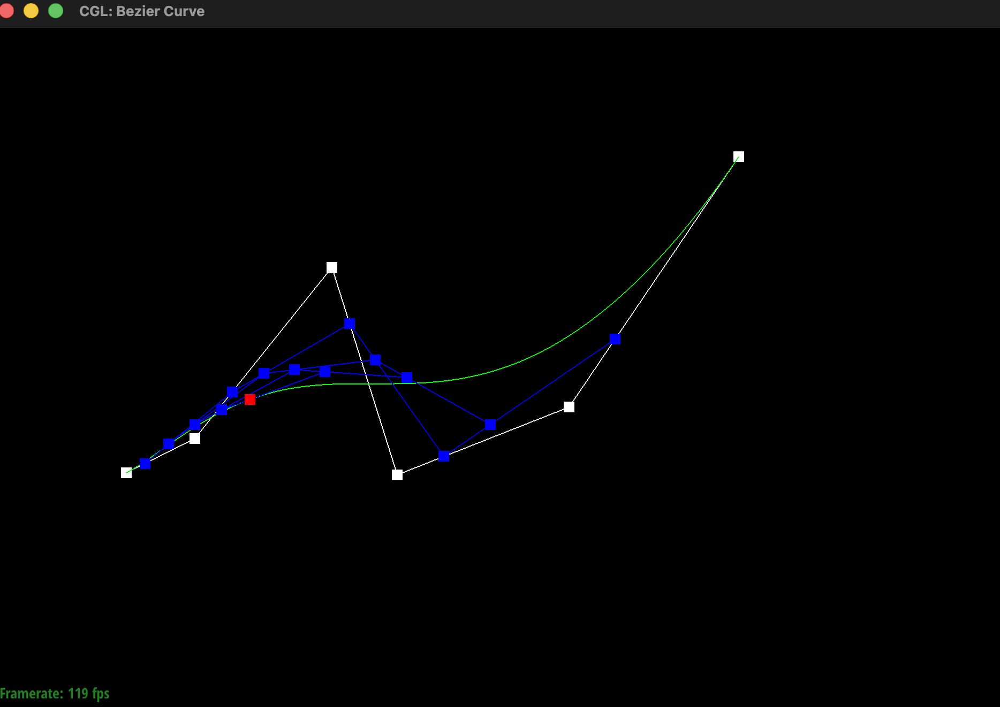
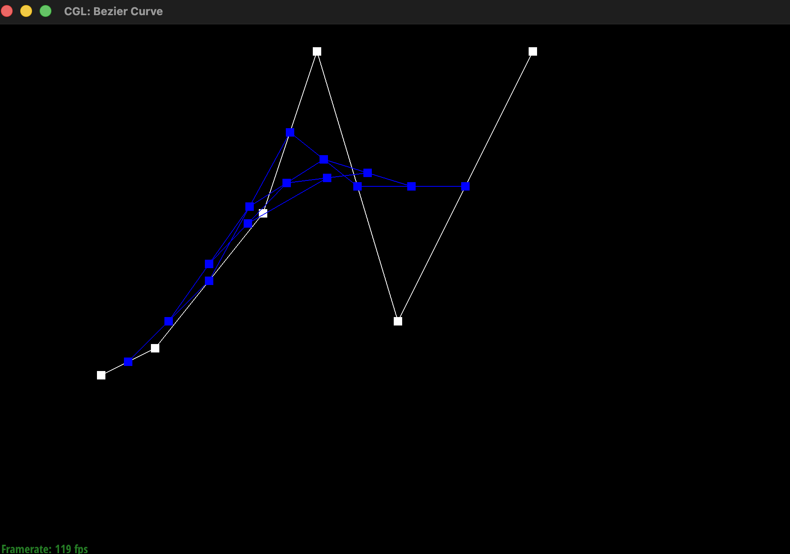
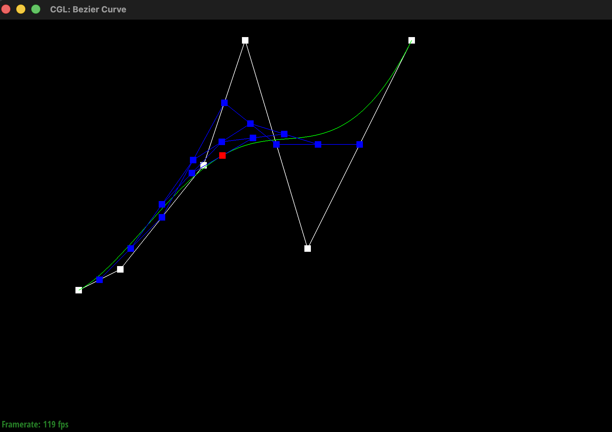
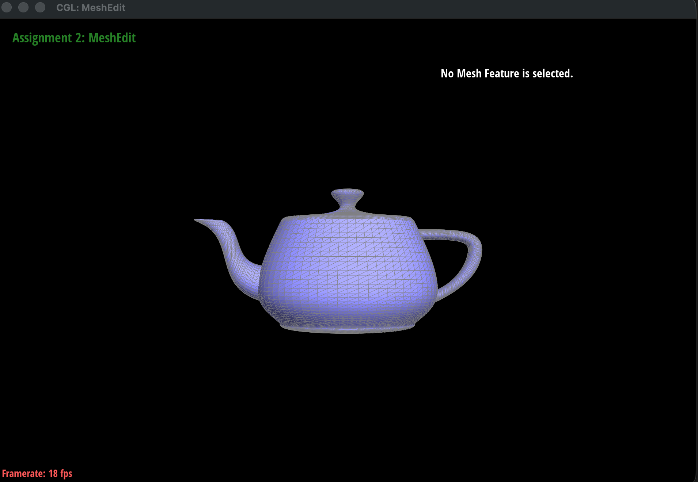

CS184/284A Spring 2026 Homework 2 Write-Up
Link to webpage: (TODO) cs184.eecs.berkeley.edu/sp25
Link to GitHub repository: (TODO) cs184.eecs.berkeley.edu/sp25
Overview
Give a high-level overview of what you implemented in this homework. Think about what you've built as a whole. Share your thoughts on what interesting things you've learned from completing the homework.Section I: Bezier Curves and Surfaces
Part 1: Bezier curves with 1D de Casteljau subdivision
This algorithm evaluates a point on the Bezier curve using repeated linear interpolation between control points. A Bezier curve is seen as a set of control points with a parameter t ranging from 0 to 1. At each step of the algorithm, new intermediate points are calculated by linearly interpolating between adjacent control points. This will output a new set of points, where the new set has one less element than the previous set. This process will be repeated recursively until only one point remains, which is the final evaluated point on the Bezier curve at parameter t.For my implementation, I evaluated the Bezier curve by taking the current list of control points and linearly interpolating between each adjacent pair using parameter t, which produces the next set of intermediate control points. I repeated the process recursively until one point remained, which is the red evaluated point on the curve.
|
 |
 |
 |
 |
|
|
 |
 |
 |
Part 2: Bezier surfaces with separable 1D de Casteljau
This algorithm extends from Bezier curves to surfaces by using the same recursive process from part 1 in two parameters, u and v. If we want to evaluate a point on a Bezier surface, which is essentially a 2D grid of control points , we need the algorithm to perform interpolation along one direction of the control point grid first, which produces intermediate points, and hen apply the same interpolation process along the other direction.For my implementation, I evaluated Bezier surfaces using this two-direction approach.First I implemented evaluateStep, which performs one interpolation step between adjacent 3D points, and evaluate1D, which repeatedly applies that step until only one point remains. Then to evaluate the Bezier surface at \( (u, v) \), I applied evaluate1D to each row of control points using parameter u, which produces one intermediate point per row. Finally, I applied evaluate1D again to those intermediate points using parameter v to obtain the final point on the Bezier surface.

Section II: Triangle Meshes and Half-Edge Data Structure
Part 3: Area-weighted vertex normals
To implement area-weighted vertex normals, we modified Vertex::normal() to compute a smooth normal at a vertex, by averaging the its neighboring triangle incident to that vertex (weighted by that triangle’s area)We used the half-edge structure to iterate over all faces adjacent to the current vertex. Starting from halfedge(), we traversed around the vertex with h = h->twin()->next() until returning to the starting half-edge. For each triangle, we collected its three vertex positions using h->vertex(), h->next()->vertex(), and h->next()->next()->vertex(). I summed these neighboring face normals and normalized the result to obtain the final unit vertex normal. This produces smoother Phong shading compared to flat shading.

|

|
Part 4: Edge flip
To implement the flip edge function, we flip the shared edge between two adjacent triangles while preserving the mesh connectivity. We rewire the six halfedges to represent the new pair of triangles formed after replacing the original edge (b, c) with (a, d). This is done by updating each halfedge’s next, twin, vertex, edge, and face pointers using setNeighbors(). We also reset representative half-edge pointers for the affected vertices, edges, and faces to maintain a consistent mesh structure.


|

|
Part 5: Edge split
To implement splitEdge, we subdivide an edge shared by two adjacent triangles by inserting a new vertex at the midpoint of the edge, then updating the surrounding mesh connectivity. When the original edge connects vertices (b, c) and has triangles abc and cbd, we insert a new vertex m at the midpoint of (b, c), replacing the original two triangles with four smaller triangles abm, amc, dcm, and dmb.
This operation requires modifying the half-edge structure locally. Three new edges and new halfedges are created to form the new triangle boundaries. We then update the connectivity of the halfedges by using setNeighbors() to assign each next, twin, vertex, edge, and face pointer so the new faces are formed. We then update surrounding mesh elements to be consistent. The original edge must connect the new vertex to the remaining vertices of the surrounding triangles. Representative halfedge pointers for affected vertices, edges, and faces are also reassigned to ensure each element references a valid incident halfedge after the split.
Unlike edge flipping in Part 4, this operation adds new elements to the mesh. We add one new vertex, three new edges, and two additional faces. The modification remains local to the neighbors of the original edge.
|
|
|

|

|

Part 6: Loop subdivision for mesh upsampling
Loop subdivision increases mesh resolution by splitting each triangle into four smaller triangles
and updating the vertex positions using weighted averages. I did this by first computing new positions
for all the original vertices using the Loop subdivision formula. For each vertex, I found the number
of neighboring vertices and calculated a weighted average of the vertex and its neighbors. I stored
these values in Vertex::newPosition so that the calculations would still use the original
mesh positions.
Next, I computed the positions of new vertices that would be created along edges. For each edge shared
by two triangles, I used the weighted rule \( \frac{3}{8}(A+B) + \frac{1}{8}(C+D) \) and stored this
value in Edge::newPosition. Then I split every original edge using splitEdge,
which created the midpoint vertices. After splitting, I flipped any new edge that connected one old
vertex and one new vertex to form the correct 4–1 subdivision pattern. Finally, I updated all vertex
positions using the stored newPosition values.
One debugging trick I used was printing messages to check that the subdivision function was actually working. I also made sure not to update vertex positions too early, since the formulas must use the original mesh geometry.
When I performed several iterations of Loop subdivision, sharp edges became smoother. This happens because vertex positions are repeatedly averaged with their neighbors, which gradually removes sharp features and makes the surface rounder. Pre-splitting edges can slightly reduce this smoothing effect because it increases the local resolution of the mesh. With more vertices around a corner, the shape changes more gradually during subdivision.
|
|
|
|
|
|
When I applied Loop subdivision repeatedly to cube.dae, the cube became slightly
asymmetric. This happens because each face of the cube is triangulated with diagonals that are not
perfectly symmetric. Since Loop subdivision works on triangles, the direction of these diagonals
affects how vertices are averaged.To reduce this effect, I flipped some edges so the triangulation on the cube faces all faced the same
way. After this preprocessing, the cube subdivided more symmetrically because the vertex connectivity
became more uniform across the mesh.
|
|
|